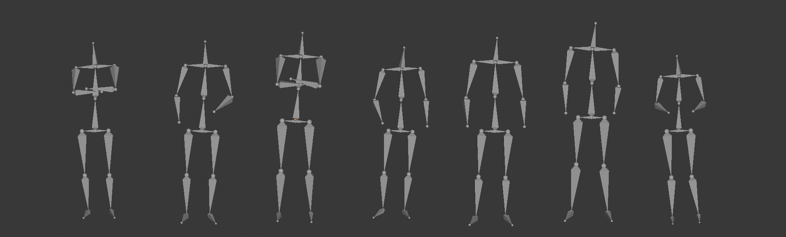
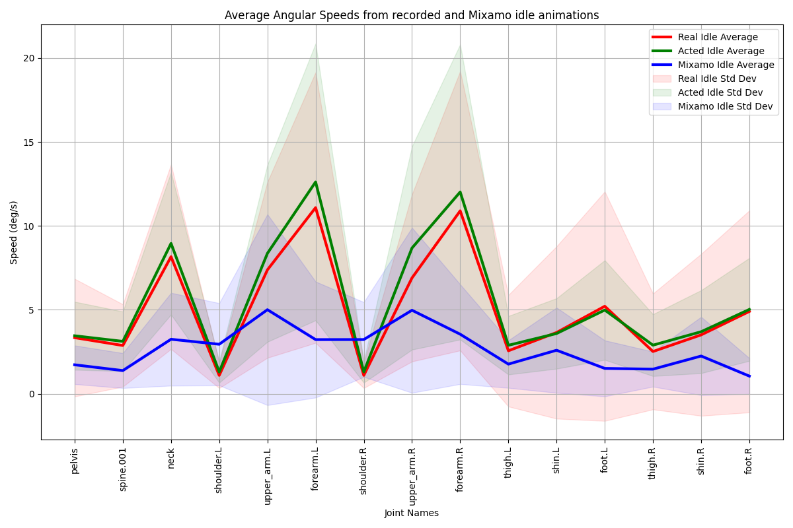
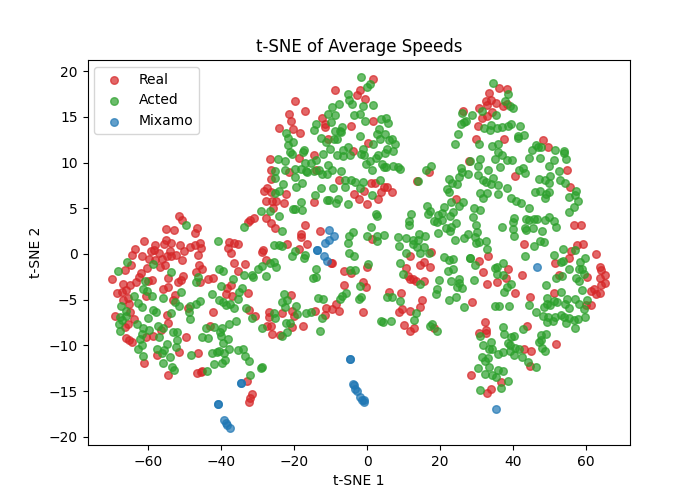
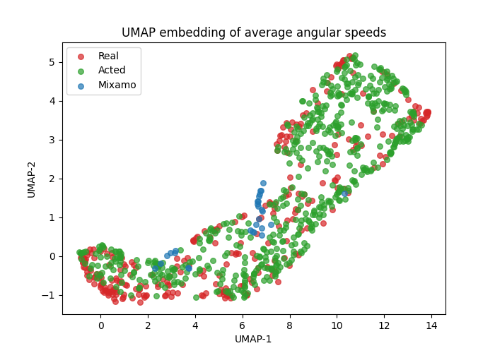

Evaluating idle animation believability: A user perspective
Published at: Computer Animation and Virtual Worlds journal

Animating realistic avatars requires using high-quality animations for every possible state the avatar can be in. This includes actions like walking or running, but also subtle movements that convey emotions and personality. Idle animations, such as standing, breathing, or looking around, are crucial for realism and believability. In virtual applications, these are often handcrafted or recorded with actors, but this is costly. Furthermore, recording realistic idle animations may be complex, since the actor being aware of the recording could interfere with the genuineness of the movements. Currently, there are no large-scale idle animation datasets for deep learning, and this recording challenge may partly explain this. Nevertheless, this paper concludes that both acted and genuine idle animations are perceived as real, and users are not able to distinguish between them. It also states that raw recorded idle animations and artist-retouched ones are perceived differently. These conclusions mean that recording idle animations should be easier than expected, implying that actors can be instructed to act the movements, significantly simplifying the recording process. This should help future efforts to record idle animation datasets. Finally, we publish ReActIdle, the first three dimensional idle animation dataset containing long sequences of real and acted idle motions.



@article{https://doi.org/10.1002/cav.70116,
author = {Landa, Eneko Atxa and Lazkano, Elena and Rodriguez, Igor and Rodriguez-Moreno, Itsaso and Irigoien, Itziar},
title = {Evaluating Idle Animation Believability: A User Perspective},
journal = {Computer Animation and Virtual Worlds},
volume = {37},
number = {3},
pages = {e70116},
keywords = {animation, idle motion, motion capture, motion perception},
doi = {https://doi.org/10.1002/cav.70116},
url = {https://onlinelibrary.wiley.com/doi/abs/10.1002/cav.70116},
eprint = {https://onlinelibrary.wiley.com/doi/pdf/10.1002/cav.70116},
year = {2026}
}